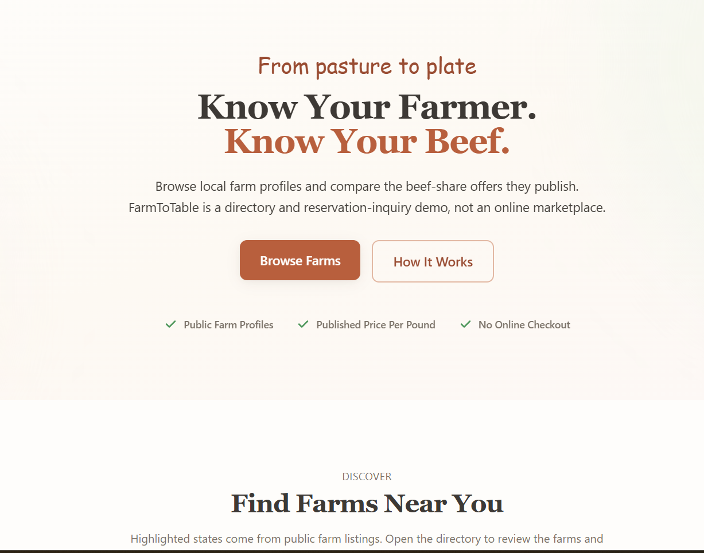
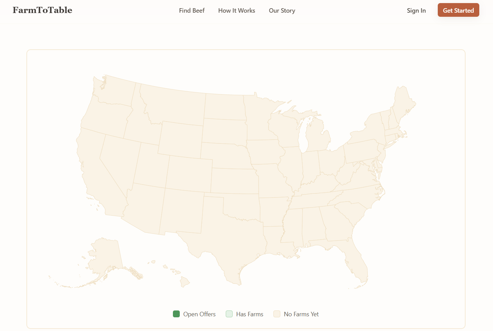

A platform I co-founded to connect people with local farms for beef shares — and my first time carrying a product from a raw idea all the way to a working MVP.

The problem
Buying beef straight from a local farm means better quality and a fairer deal for the farmer. But for a first-time buyer the path is opaque, and it closes through a phone call or a form — nothing like the checkout people are used to.
I co-founded Farm to Table to make that path approachable, and to find out whether I could take a product from a blank page to something real.
What I owned
As a local Iowan, this project is deeply personal to me. I grew up around the people and practices that shape this space, and for Farm to Table’s initial launch I’m working directly with farmers — not just designing for them, but building alongside them. That proximity gave me a clear understanding of how trust, communication, and relationships actually drive these purchases, and it grounded every product decision we made.
I ran the user research that decided what we built, set the roadmap and the MVP scope, translated what I learned into user flows and wireframes, and built the frontend that turned the concept into something people could open and browse — working alongside a small engineering team as we went.
Who it's for
The research had to hold both sides in view — what makes a buyer hesitate, and what makes selling this way painful for a farm.
Curious about buying direct but unsure how a beef share works. Need the unfamiliar parts made approachable.
Want to be found and to publish what they offer — without handing the customer relationship to a marketplace.
Already sold on buying local. Want to compare what's available near them and reach the right farm quickly.
The process
Talked to potential buyers and local farmers to understand both sides of the transaction — where buyers hesitate, and what makes selling this way hard for a farm.
Turned what I heard into a sharp scope and made the call that shaped everything: directory and inquiry, not a marketplace — the smallest thing that could prove people would buy this way.
Mapped the buyer's path from finding a farm to reaching out, deciding what belonged in a first version and what could wait.
Turned the wireframes into a real, browsable directory, iterating with the engineering team and validating against feedback as it came in.
The MVP
The result is a directory where buyers find the farms serving their state and review what each one publishes — built so the unfamiliar parts of buying a beef share feel approachable rather than intimidating.
